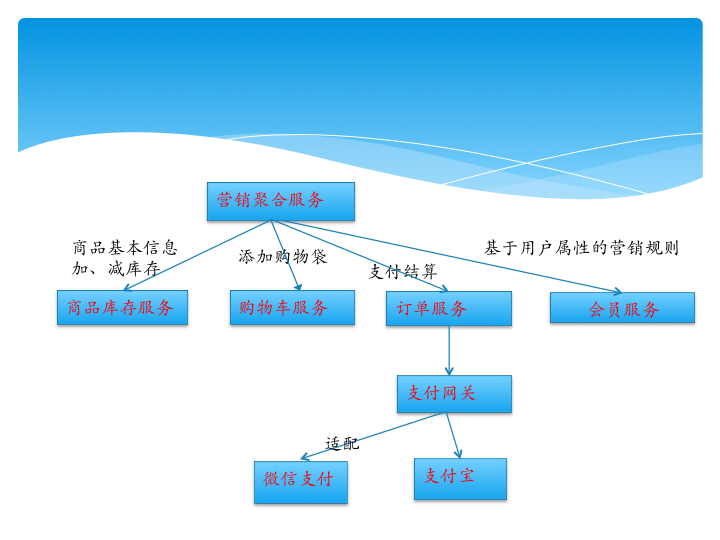
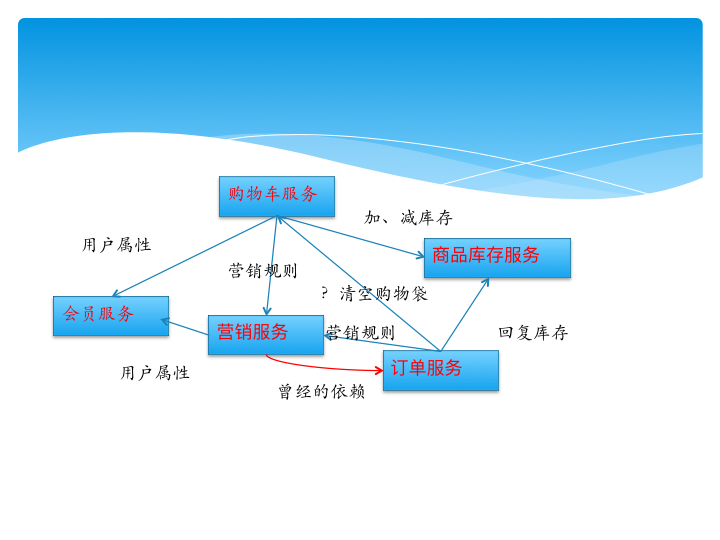

微服务分层思想
在多年开发实践中，长期处于代码分层不清晰，不易阅读，从代码理解业务过于困难，而且由于历史迭代原因，代码变得不可维护，最好导致很多同学维护不动只能跑路。
基本指导思想
分层思想
基本原理就是分层，分为聚合服务、原子服务、适配服务。通过聚合服务达到业务逻辑的实现，原子服务则是对不变的业务进行原子化，同时也确定业务的职责、边界。适配服务屏蔽了外部服务的变化，比如调用第三方服务：微信支付、支付宝支付、第三方登录。
扁平化
服务依赖层次不能太深，一方面增加系统的复杂度，一方面影响性能。如果层次加深，一般要通过聚合服务实现扁平化。
不能依赖倒置
底层服务不能依赖上层服务。
如图1所示应该是一种比较合理的架构： 
如图2所示带有缺陷的架构： 
错误的代价
方案一、方案二的优缺点，我先不说。我用一个故障来验证。 血案是这样产生的：一次会员服务发布出现故障，由于购物车依赖于会员服务，这时调用会员服务的请求存在大量的超时，同时有部分请求是调用营销服务，这时营销服务也有部分请求去调用会员服务，由于存在超时，这时购物袋调用营销的请求也就出现超时，由于整个系统的死循环依赖，导致订单服务也出现大量的请求超时，从而从一个会员服务的错误波及到整个系统。 但是如果采用方案一，出现会员服务故障，整个系统也不会瘫痪，如果请求不涉及到会员属性，那么这些请求还是属于正常的请求，从而到达服务柔性可用的状态，但是如果大量的请求大量堆积到会员服务，最终整个系统也瘫痪，但是这种情况恢复也比较快：回滚会员、重启购物袋服务。 但是方案二故障恢复就比较麻烦：回滚会员，重启所有服务，清除所有超时的请求。
边重构边生活
微服务的另一个重要活动就是治理。治理的范畴：减少依赖的层次，简化依赖，避免出现循环依赖。